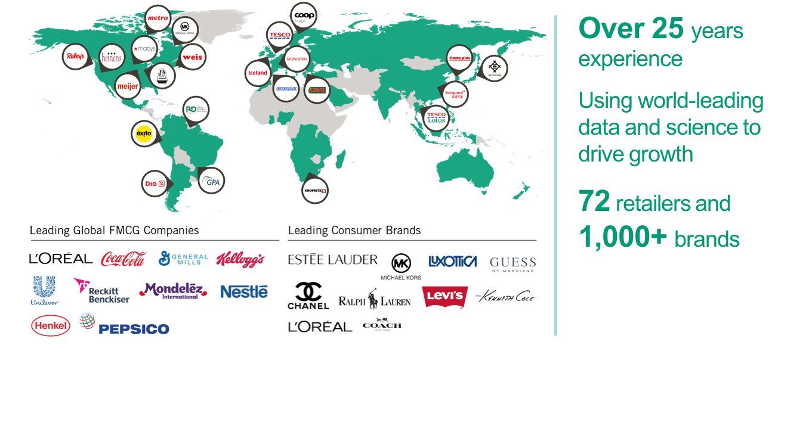
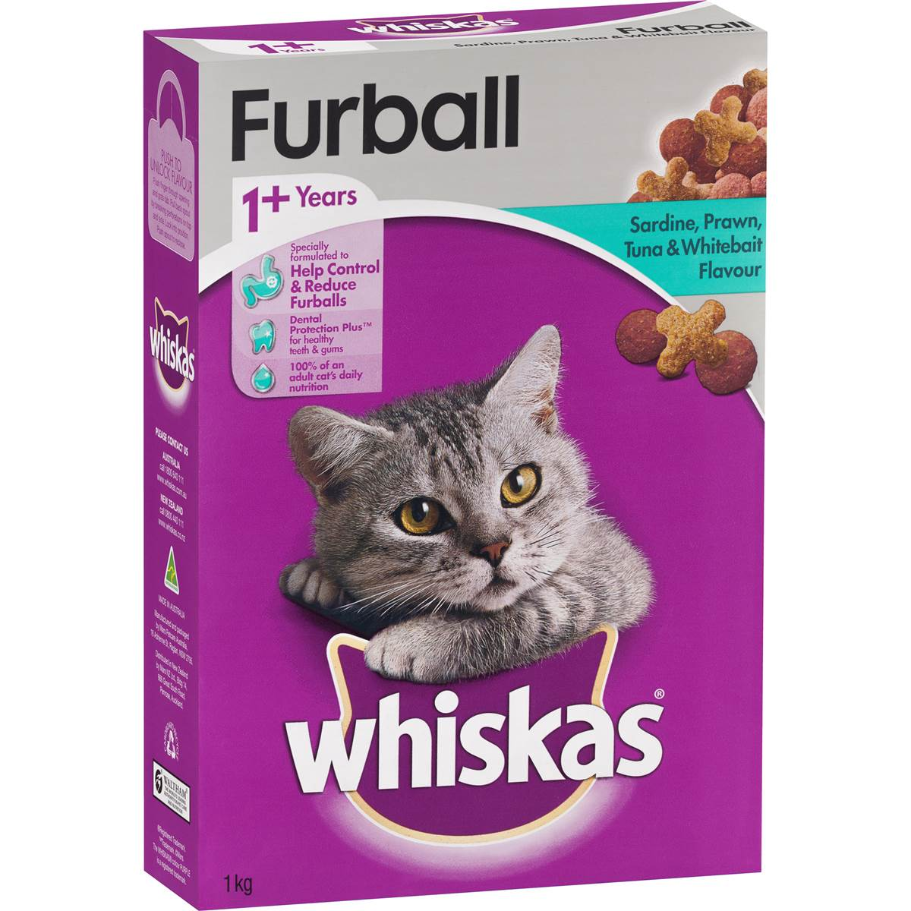
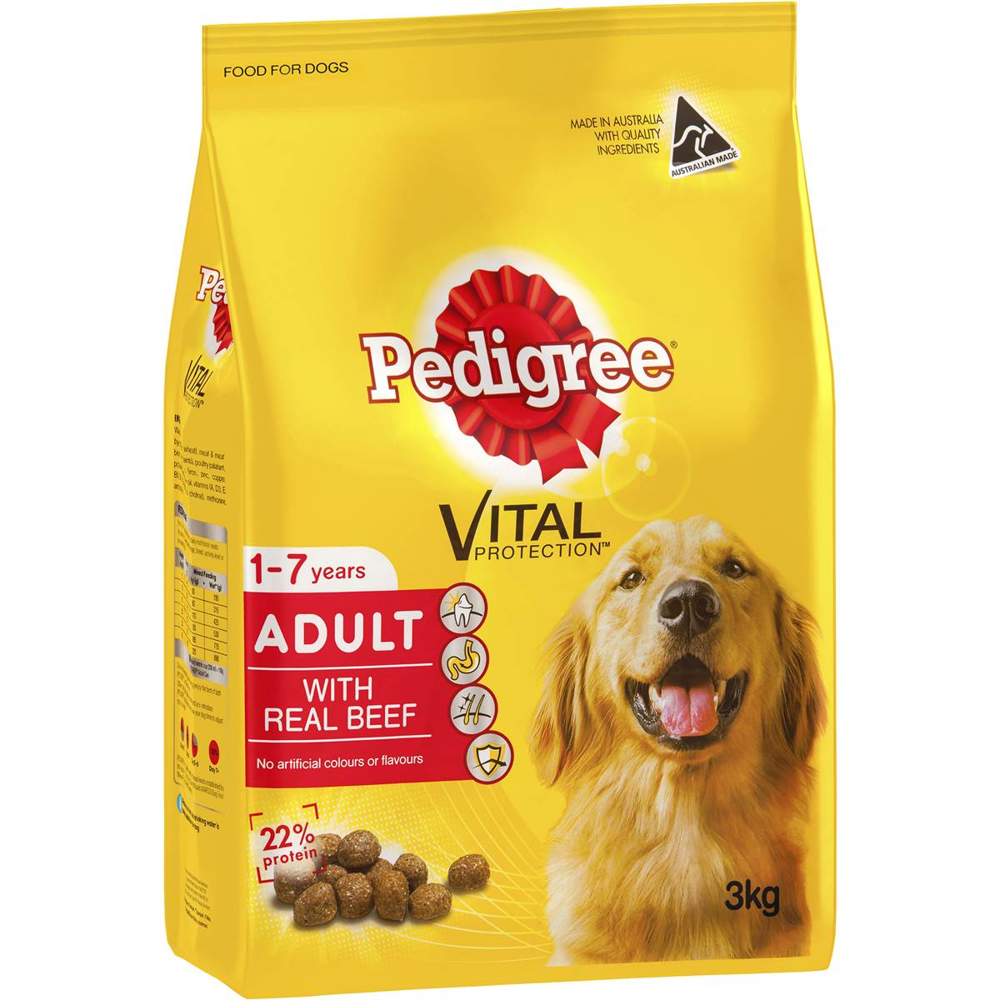
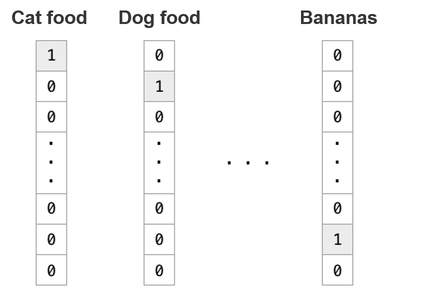
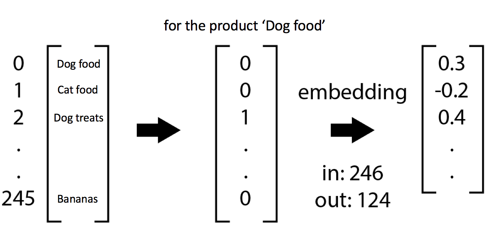
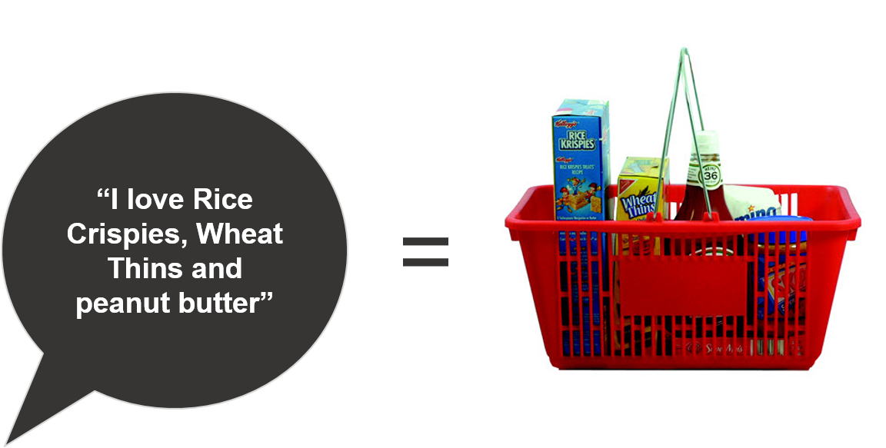
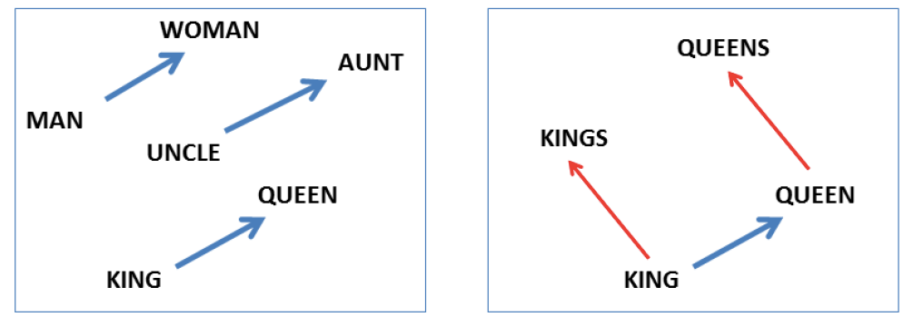
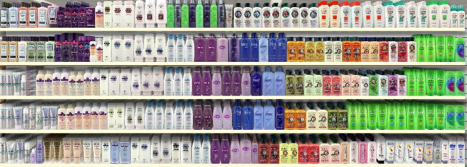

Understanding customers better through neural network embeddings
Adam Hornsby(adam.hornsby@dunnhumby.com)
About Me
- Senior Data Scientist @ dunnhumby (4.5 years)
- Researching and deploying machine learning at scale
- Experimental Psychology, PhD Student @ UCL (part-time)
- Researching consumer decision-making through experiments, big-data and computational modelling
Extensive heritage and experience working with retailers and brands
-

Today
- Why item similarity is so important in retail science
- What are embeddings?
- How can 2vec algorithms help?
- Conclusions
(Massive thanks to Josh Cooper for doing lots of the thinking in this presentation)
Item similarity
How similar are these two products?
-

Questions of similarity are everywhere in retail:
"Your selected product X goes well with product Y" (i.e. product complementarity)
"Your product X was not available, so how about alternative Y?" (i.e. product substitutability)
"Products of this type tend to be placed together on the shelf" (i.e. product similarity)
"Customers like you also tend to buy Y" (i.e. customer similarity)
Solving similarity is a huge goal for data scientists working to improve; recommendations, ranging, pricing, assortment and more
Traditional methods don't help with similarity
-

Most scientists will use dummy (or one-hot) encoding to represent categorical data
Dummy coded data is too sparse (i.e. too many zeros)
Any similarity measure will tell you that cat food and dog food are totally unrelated using this approach
We need a way to represent these items using dense vectors
Embeddings
Embeddings are dense representations
-

Traditionally used in natural language processing (NLP)
Learned dense representations of otherwise sparse data (vector size is a parameter)
Typically learnt with neural networks
When learned well, produce similar vectors for similar items (e.g. cats vs. dogs)
Geoff Hinton has argued that all thoughts can be represented with embedding vectors
*2vec Algorithms

A set of unsupervised learning algorithms that learn vector embeddings (Mikolov et al.)
word2vec used to learn vector embeddings for words
doc2vec used to learn vector embeddings for documents (e.g. sentences)
Create lots of little classification problems (e.g. use vector from one word to predict next word in sentence, then backprop)
Typically very fast to train and scale well to large data
Sentences vs. Baskets
-

NLP algorithms (like doc2vec) assume that you have words (i.e. items) and sentences (i.e. documents)
Products are analogous to words and baskets/customers are analogous to sentences
This data is a neat place to test NLP algorithms (e.g. no order, "stop words" and arguably more natural)
e.g. A basket can be represented as a vector of product codes or descriptions
["Rice crispies", "Tomato ketchup", "Peanut butter"]
The model
The modelling problem
Aim: Understand whether doc2vec can learn useful vector representations of products and baskets
Model developed on free transactional dataset from dunnhumby source files
2 years worth of transactions from 2500 households
Using gensim implementation of doc2vec (Python)
Learn product and document vectors at same time
Trained on GCP Compute Engine (4 vCPUs and 15GB memory) in (~10 minutes per experiment)
Model solutions evaluated using Tensorflow's amazing Embedding Explorer
Evaluation
Analogical reasoning
-

Semantic relationships between words are typically preserved within embedding space
$King - Man + Woman = y$
Vectors most similar to $y$ tend to be related to "queen"
What would be the equivalent using product embeddings?
Identifying cheaper alternatives
Premium Meat - Premium + Economy = ?| Rank | Product description | Cosine similarity |
|---|---|---|
| 1 | Economy meat | 0.542439 |
| 2 | Margarine stick | 0.518072 |
| 3 | Carrots (bagged) | 0.500584 |
| 4 | Chocolate milk | 0.489882 |
The most similar product to the target vector is economy meat. Other items are also cheaper alternatives.
Suggests that there is a "price sensitivity" direction within the space
Identifying vegetarian alternatives
Frozen Burgers - Beef + Tofu = ?| Rank | Product description | Cosine similarity |
|---|---|---|
| 1 | Frozen entrees | 0.518292 |
| 2 | Frozen meat (vegetarian) | 0.484718 |
| 3 | Frozen meal combo/dinners | 0.464290 |
| 4 | Eggs | 0.462903 |
The most similar products to the target vector tend to be frozen and/or meat free
Suggests there are "frozen" and "vegetarian" directions within the embedding space
Conclusions
The model looks great
+ Very visual application of machine learning in retail
+ The model appears to understand product similarity well
+ Analogical reasoning results seem intuitive
+ Scales better than rival algorithms (e.g. NMF)
- Need some more automated ways of evaluating the model
- Need less homogenous way of representing baskets & customers
- Interpretation of "similar" is slightly unusual (neither comps nor subs)
This model has many applications
-

Global deployment of model in collaboration with partners
Ultra-fast deployment of basket and customer segmentations with new clients
Exploring use of model to suggest alternative & supplementary products in ranges during store ranging
Exploring power of new features in personalised recommender systems
A significant leap forward in the endeavour to describe similarity
Thank You
@adamnhornsbyadam.hornsby@dunnhumby.com
dunnhumby.com/careers